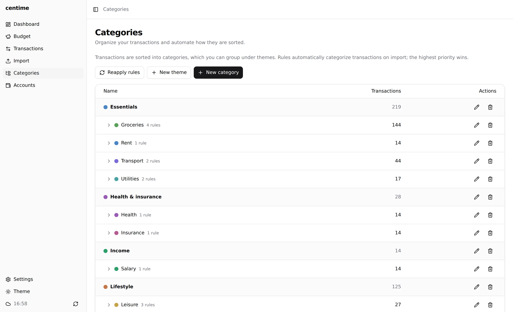
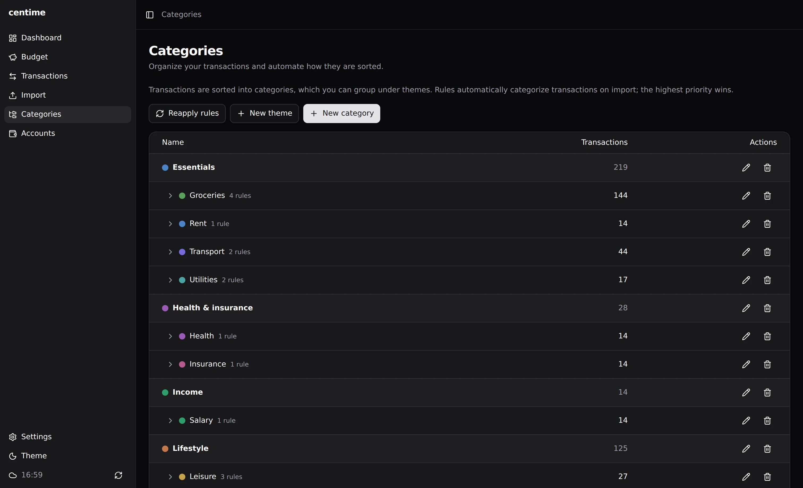
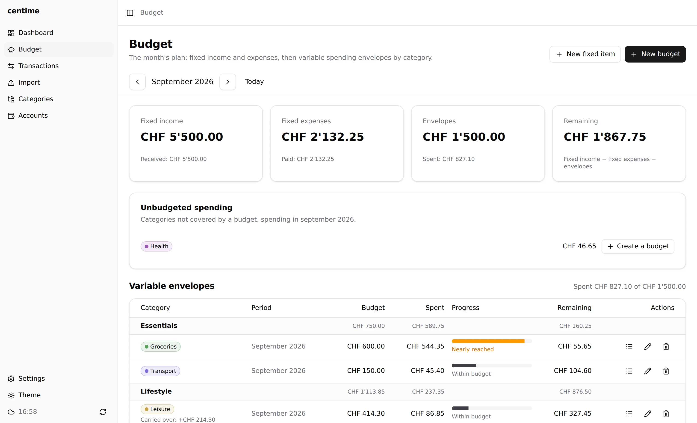
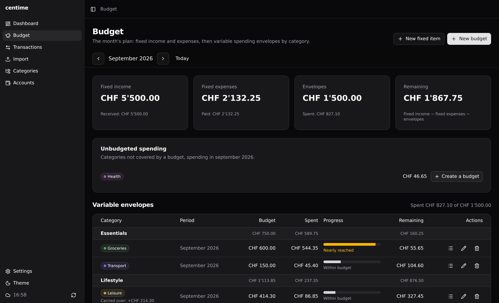
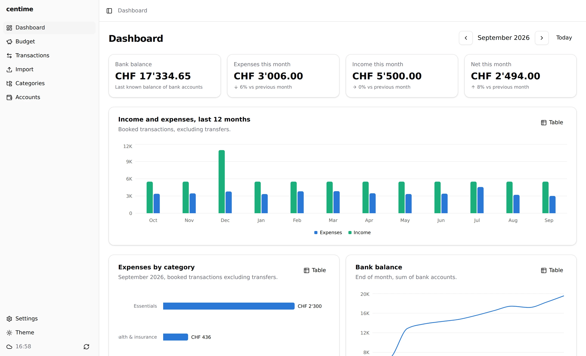
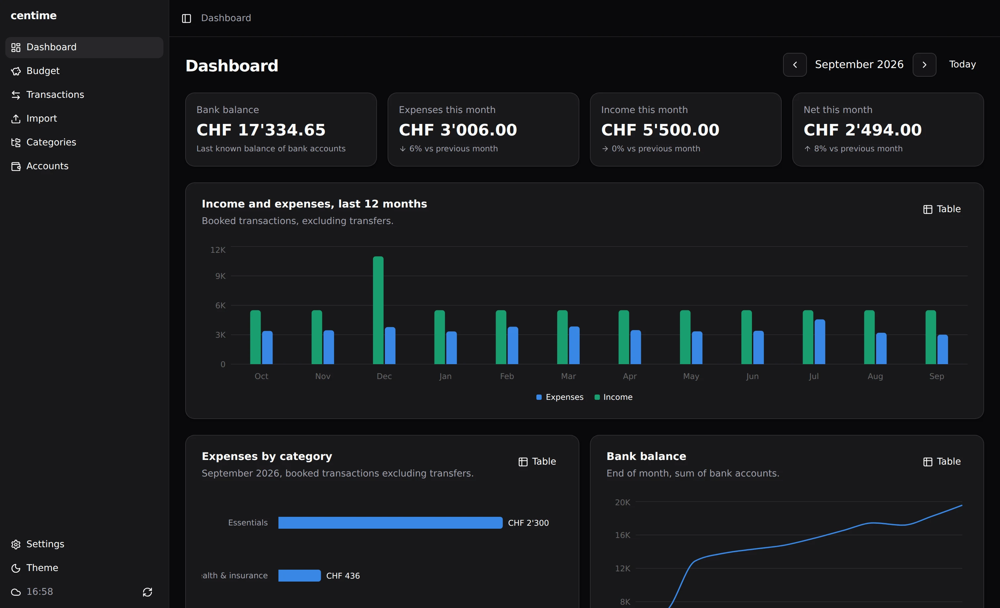

Categories and budgets
Categories and rules
Categories are grouped by theme, and each transaction is filed under a category. Rules assign categories automatically: a rule matches the label, the merchant or the provider category, either with a contains test or a regular expression. Rules run at import time or on demand.


Split transactions
One receipt can cover several categories, such as groceries and household goods. Split… in the row menu of the Transactions page spreads the transaction over several lines, each with a category, an amount and an optional note. The amounts are typed without a sign and must add up to the total; the dialog shows what is left to allocate. The dashboard, budgets and category filters then count each line in its own category. Choosing a single category again, or marking the transaction as a transfer, removes the split.
Budgets
Each category can hold one budget, of one of two kinds.
- Envelope: a cap on spending. Unused or overspent balance can be carried over to the next period. Centime also projects your spending at the current pace and keeps a history.
- Income: the amount a category should receive per period, such as a salary, compared with what actually came in.
Filing a transaction under its category is all it takes. A budget can also carry a rule that files matching transactions automatically.
Month plan
Income and envelopes on a single page, envelopes grouped by theme. One Add button creates either kind. The remainder of the month is: income − envelopes.


Dashboard
Bank balance, spending, income and net for the month compared with the previous one, points of attention, 12-month income and spending, spending by category, balance trend, budgets and the latest transactions.

